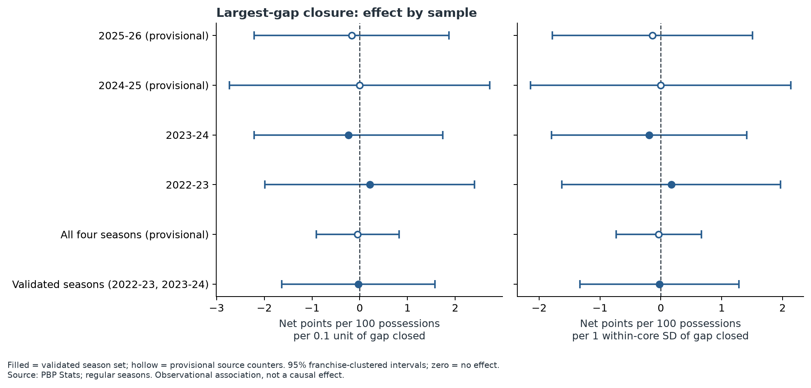
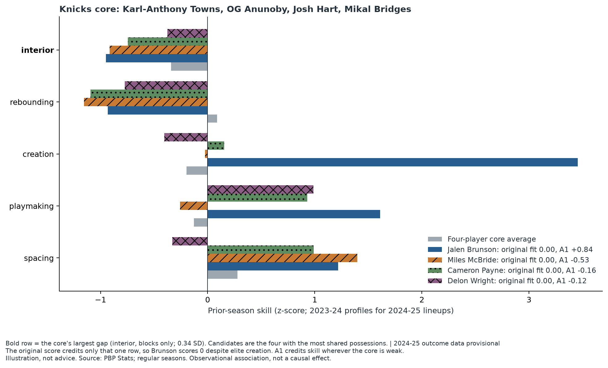
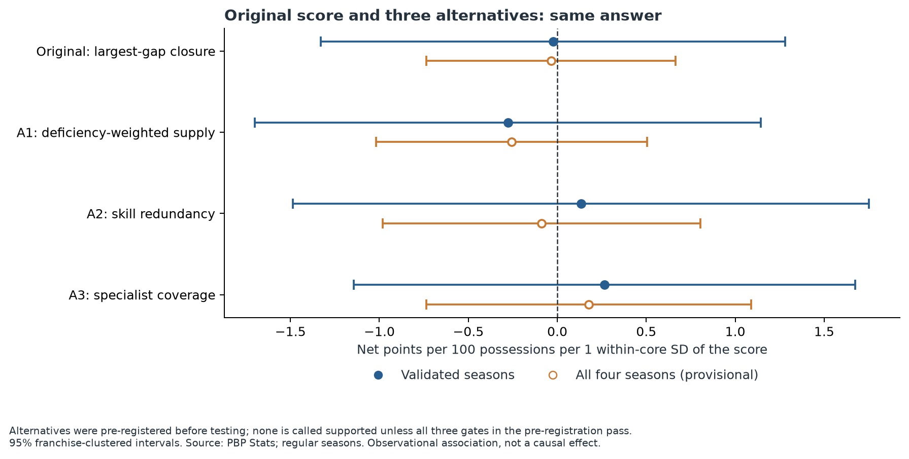
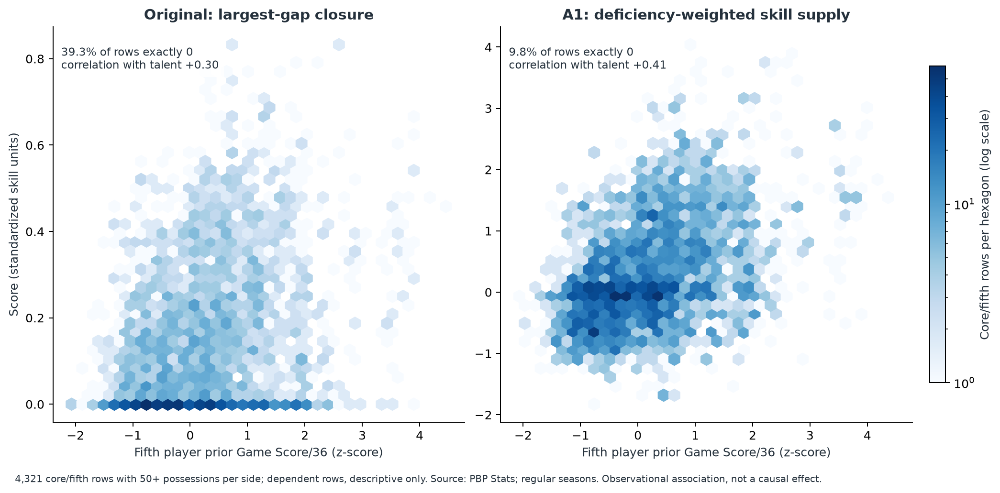

Does filling a lineup's biggest skill gap beat adding the better player?
I tested the "fit" argument on four NBA seasons of lineup data. The honest answer so far: no reliable evidence that it does.
Findings
| Sample | Effect per 0.1 gap closed | 95% interval | Lineups |
|---|---|---|---|
| 2022–23 and 2023–24 (independently validated) | −0.03 | [−1.63, +1.57] | 808 |
| All four seasons (two provisional) | −0.04 | [−0.91, +0.82] | 1,537 |
Effects are net points per 100 possessions. The score also did not improve next-season predictions (change in error +0.0009, interval [−0.0057, +0.0069]). These are associations among observed lineups, not causal effects.

The Knicks example: why Jalen Brunson scores zero
In 2024–25 one Knicks core was Karl-Anthony Towns, OG Anunoby, Josh Hart and Mikal Bridges. Its largest gap is blocks, only 0.34 SD below average. Jalen Brunson cannot close it, so his fit score is zero, despite creation of +3.46 SD and playmaking of +1.61 SD. McBride, Payne and Wright also score zero. Of the rows analyzed, 39.3% score exactly zero. A zero is not a verdict on Brunson; it shows how narrow the score is. An alternative that credits skill wherever the core is weak does separate the four candidates (Brunson +0.84), but it predicts lineup results no better.



What Does This Actually Mean for NBA Fans?
Teams talk about fit because five great shooters with no rebounder struggle, and a lineup with no creator stalls. This study measured the simplest version of the idea, and it added nothing beyond talent and skills in these seasons. That does not show chemistry is fake: it shows one crude box-score measure of fit did not show up in noisy lineup data.
- Fans: talent and minutes explain most of what you see; ask what was measured when someone says a player "fills a hole".
- Coaches: do not choose a fifth starter with this score; it cannot separate Brunson from McBride.
- Front offices: the data cannot show fit pays off, and cannot rule out a modest benefit.
- Still open: whether tracking data, defensive impact and shooting gravity reveal an effect box scores cannot.
Limits
- Two of four seasons failed an independent data check, so the preferred estimate uses only the other two.
- Coaches choose lineups; injuries, opponents and matchups are not modeled.
- Blocks are not defense, and Game Score is not impact.
- The intervals leave room for modest effects of either sign.
Code, audit and article
Repository · Audit · Article